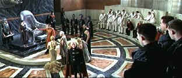

| Titus
(SE)/B+,B- |
| Fox/1999/162/ANA
2.35 |
Julie Taymor works harder at Titus
than Shakespeare. The outrageous character behavior and unrelenting darkness enveloping
Shakespeare's ancient Roman vision are embellished and expanded upon by writer/director Taymor.
Taymor's visually overpowering Titus is an audacious assault on the senses.
While many critics lambaste Titus Andronicus as an immature play of play of
Shakespeare's youth, the storyline is thoroughly compelling, if unforgiving. Propelling the action,
the flawed hero Titus, brings down his own house with pious righteousness. Can Titus's
cold swagger, tempered by the blood of his family, make a sympathetic character of him. It's too
tall a task for this brutal and bloody tale. Taymor washes everything with an extra helping of
blood and garishness.
 |
| Breathtaking production design and staging. ©Fox |
The opening staging is merely phenomenal. The stylized mechanical movement of
Titus' soldiers suggests they live in the imagination of a young boy. Yet, I personally found
aspects of Taymor's anachronistic interpretation confusing. Visual flourishes range from MTV
to Buñuel to Dali, and, like the tone, this intentionally chaotic element makes for disconcerting
viewing. Nevertheless, the spectacularly hypnotic nature of the production compensates for some
overzealous cross pollination of time periods on the part of the director.
Acting interpretations are a mixed bag with a level of consistency hidden in the
dark recesses of ancient Rome. Anthony Hopkins brings great icy authority to the early Titus. By
the end of the production his Titus either a raving maniac or a refugee from Silence of the
Lambs. Jessica Lange plays Goth Queen Tamora with venomous intensity pretty much from beginning
to end. Alan Cumming is definitely playing to another piper as Emperor Saturninus. Prancing about
with pursed lips and lascivious leer, Cumming is consistently playing black comedy. Effectively on
the straight and narrow are Colm Feore as Marcus Andronicus and Angus MacFayden as eldest
Andronicus son Lucius.
Elliot Goldenthal's remarkable score is every bit as powerful as the
fabulous production design. Goldenthal, whose classical chordsmanship has enhanced films like Heat,
Demolition Man and Michael Collins, is especially in synch with director Taymor. Hail
to the cinematography of Luciano Tovoli, the production design of Dante Ferretti and the costumes
of Milena Canonero.
Visually, Titus is a mixed bag on this two DVD special edition set.
There are times when the image is penetratingly deep with detail resolved to perfection.
Unfortunately, many scenes suffer from gross over enhancement with ghosting more appropriate to
Hamlet. Taymor's ice blue dark scenes are difficult to to successfully pack enough visual punch on
the home theater screen. Dynamic range of the Dolby Digital 5:1 Surround Sound is highly
effective. From a whisper to a shout to an anguished cry, voice is treated like an instrument and
delivered with outstanding clarity. The music, haunting the characters, hangs like a death shroud
in the background waiting to claim its victims. Truly an outstanding balance of sonic control.
Julie Taymor featured on one audio commentary notes that Jessica Lange
never performed Shakespeare before, and I was so surprised considering the power the actress has
portrayed on the screen. Taymor is very specific about the films details, from plot, from
stylization to costumes and settings, Happily, Taymor is an outstanding speaker and listening to
her is simply musical. Not surprising considering the way she works. Another commentary provide
scene specific observations from actor Anthony Hopkins and producer Harry Lennix, and Elliot
Goldenthal makes some spare remarks over the isolated music score. Disc two contains a 49 minute
documentary, some interviews with Taymor which naturally overlap the audio commentary
|
|
|
|

Selections from the feature archive include articles on Akira Kurosawa,
Frank Darabont, Blonde Bimbos, Hollywood
Street Gangs, or Vietnam:
The Hollywood Pariah, and many more....

Click on the image above for as original view of Akira Kurosawa's work
Sturges Emerges

Preston Sturges was Hollywood's resident comic genius for more than a decade. His movies are
timeless. Click on his image to read all about it.

 Gary Morris's insightful publication Bright Lights
Film Journal turns the celluloid in films from a unique perspective. Click on the image above
for more pure movie views. Gary Morris's insightful publication Bright Lights
Film Journal turns the celluloid in films from a unique perspective. Click on the image above
for more pure movie views.

The home of Francis Ford Coppola's Zoetrope
Studios has more corridors of interest than you might expect.

Now a major independent DVD distributor, Image has parlayed its laser disc business
to success. Great DVD release calendar info.

DVD News, Reviews, Previews, Easter Eggs and more.
|